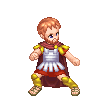
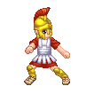
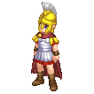
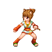

4.0资料片-全新NPC再现
|  | 罗马将军： 由游牧起家的罗马将军，拥有与生俱来的实力、暴力、占有等特性，罗马人喜欢在竞争场里，把血淋淋的杀戮当作最刺激的娱乐。后来当罗马将军远征希腊时，被希腊哲学、艺术、文学等各方面的文明魅力所吸引，这也影响了罗马后代的文化生活气息。 |
|  | 罗马士兵： 好战精神是罗马士兵的基本象征，拥有过人的体能、耐力与军事能力，往往能在很短时间内，构筑坚固的野战工事。经过长期的战争锤炼，罗马士兵对于每场战事，都能轻而易举的获得胜利。 |
|  | 罗马战士： 罗马的军队由公民所组成的，在经过长期训练与磨练后，才可成为英勇的战士。在当时社会制度体系下，战士的身份地位仅次于王公贵族，可见罗马战士在当时保有一定的威严与权利。 |
| 波斯国王： 在亚历山大政权瓦解之际，波斯国王发挥了统领能力，在极短时间内，迅速的重整波斯王朝，待整备军力完成后，波斯国王率领大军从美索不达米亚开始扩展势力版图，最后成功建立起横跨欧亚非三洲的大帝国。 | |
| 波斯女贵族： 天生就散发出雍容华贵气质，再加上婀娜多姿身材，更突显女贵族的上流美。除了平时相夫教子外，平时也时常陪同丈夫出席于高级宴会上，与一些贵族人士的互动，藉此提升丈夫在外界的身份地位。 | |
| 波斯男贵族： 在社会拥有一定地位的波斯贵族，总是常在私人聚会中出现，藉由这些私人聚会来结识更多人脉，甚至还可以攀交到王室中的成员。这些贵族平时自认清高，不过他们的身家财产，可是象征国家富有与否的最佳指标。 | |
|  | 铃音： 拥有叛逆个性的铃音，精通各式忍术，作风强悍，不畏恶势，却没有人知道她的过去，她的行踪来去不明，居无定所。经常仗义直言于大街小巷里，锄强扶弱的个性，也让许多当地恶霸恨之入骨，但铃音高深莫测的忍术，也让这些恶霸对她无可奈何。 |